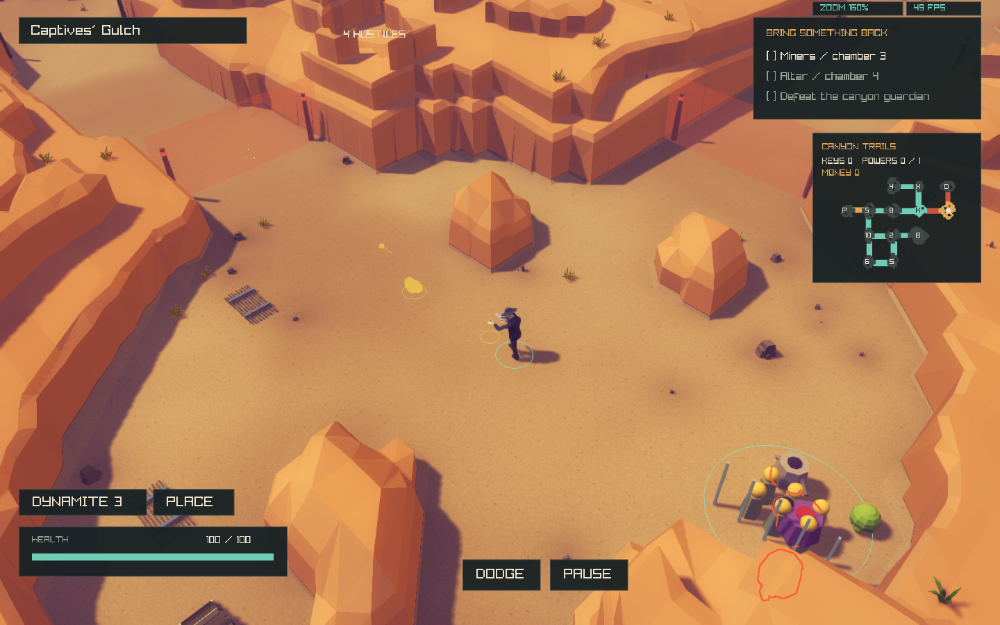
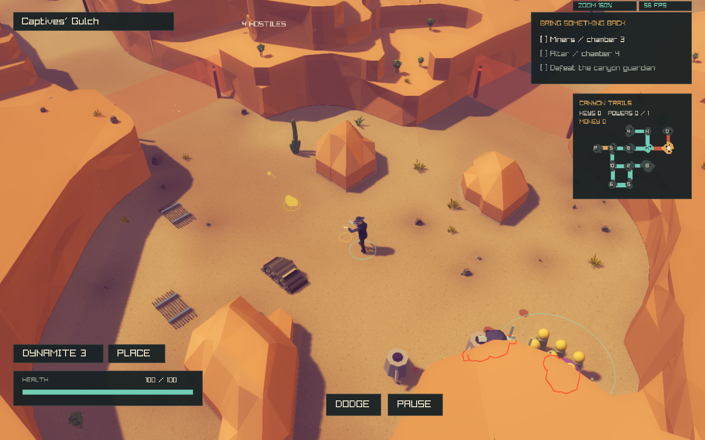
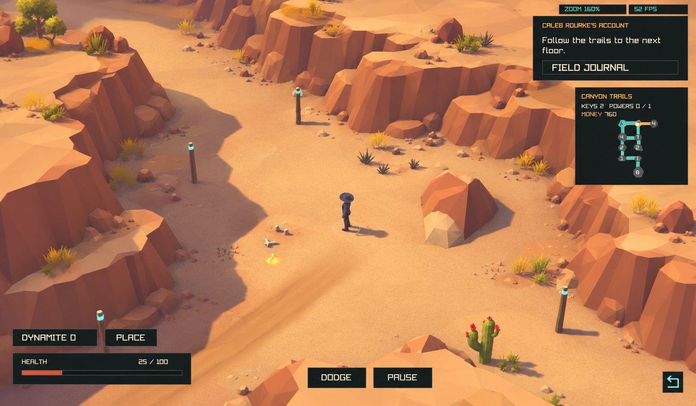
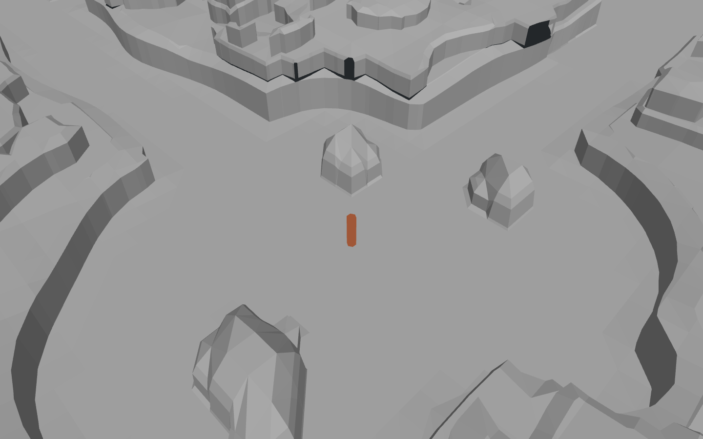
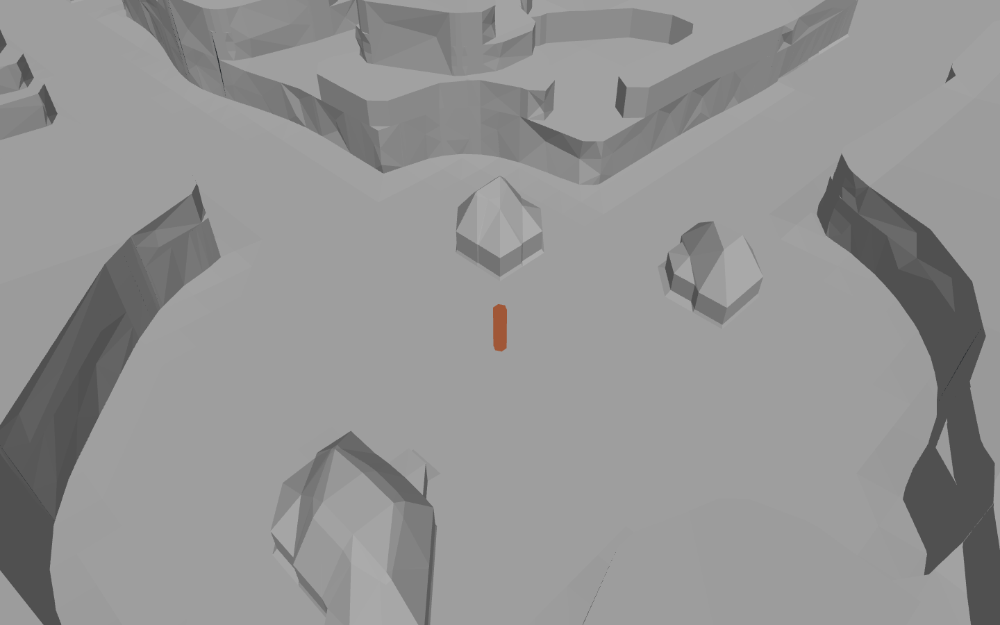
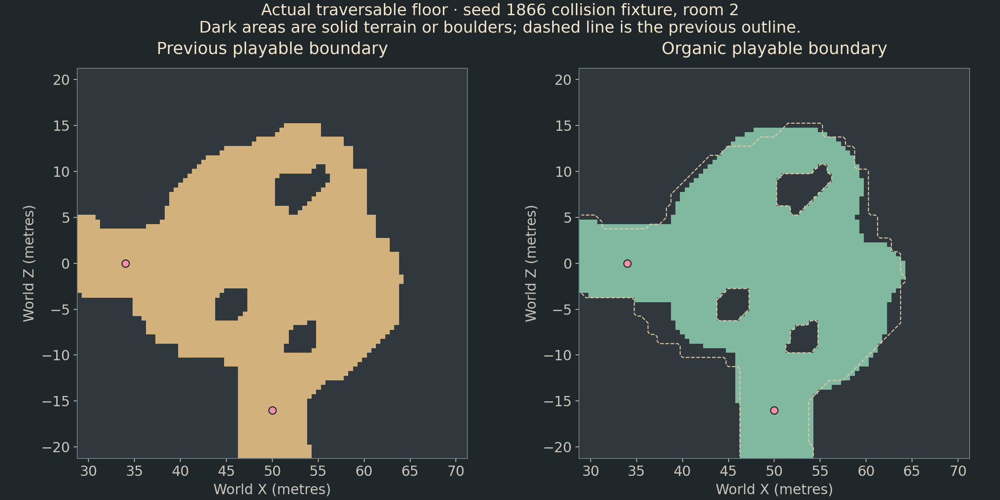
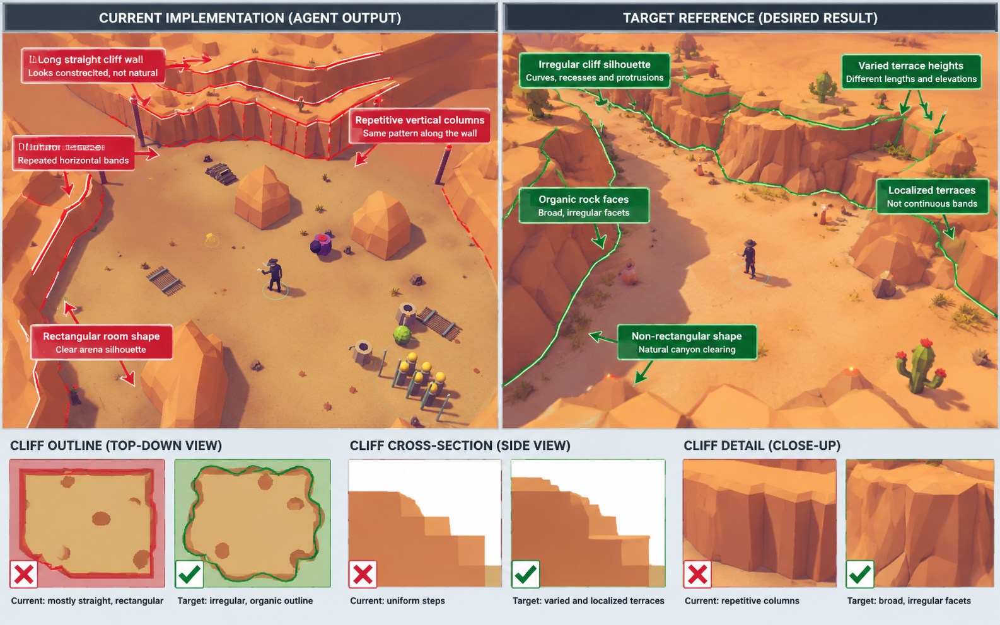

REJECTED / RETIRED. This rebuild has been removed from the active game. The committed canyon is restored; current work is a small face-detail study only. Experimental sources are archived under canyon-formations/rejected-source.
Canyon boundary geometry correction
The previous outline-only pass did not address the whole annotated specification. This pass changes the contour, terrace construction and wall topology together. The images below are native renders. Passing regression checks does not certify an exact visual match.
Structured evidence and source hashes · Current configuration · Reversible previous band geometry · Native build
Before and after
Original style, seed 1866, the same Works room and frame count, unchanged 160% zoom, 45° perspective and 1440 × 900 capture size. The physical outline is intentionally reshaped under the user's authorization. Enemy positions and supported decoration can consequently differ; their placement rules were not edited.

Before: previous band mesh on the earlier organic outline
Current: unified contour caps, local terraces and broad facesCompare with the visual specification
The target is 1640 × 959; native output is 1440 × 900. Its exact source seed and camera position are not available. Compare geometry, proportions and surface orientation; this is not a claim of pixel-identical composition.

Target concept supplied by the userCurrent native game captureGeometry without dressing or post-processing
The diagnostic uses the production camera offsets, 160% zoom and a 1.8-metre player-height cylinder. Neutral normal-based lighting exposes the mesh. It excludes vegetation, props, textures, shadows, UI and post-processing. The left control uses the previous band mode on the same current physical floor.

Previous band geometry; current physical floor
Current unified contours and local terrace polygonsAnother seeded room
The quiet power room makes the outline and upper terrain easier to inspect. Both captures use the same 160% production camera and 120 frames.
Each annotated issue
| Issue | Concrete correction | Visual limit |
|---|
| Rectangular clearing / long straight wall outline | Seeded multiscale basin lobes, protected road corridors, and a linear signed-distance collar replace the grid-snapped edge. The upper contour is simplified independently of the exact ground contact. | Road shoulders and protected river regions constrain the contour. Some long faces remain. |
| Repeated vertical columns | Unified polygon boundaries replace per-cell wall strips. Open chains are traced back to their heads before meshing. Coarse irregular face widths and staggered interior heights span several source edges. | Sharper concave corners can still require smaller faces. Broad planes remain less eroded than the concept. |
| Repeated horizontal terrace bands | Finite, irregular geological patches are intersected as polygons. Higher patches nest inside lower ones. Caps are the difference between adjacent elevation regions; a terrace can start and end locally. A polygon opening removes narrow raised tongues after clipping. | Adjacent patches can merge into a longer shelf; this is no longer a room-wide distance band. |
| Uniform steps and heights | Independent patch footprints, increasingly rare higher tiers, bounded elevation variation and a shared coarse planar cap field. | The nominal elevations are still an art-direction parameter set, not a reconstruction of the exact reference formations. |
| Abrupt/repetitive ground contact | The complete canonical foot contour remains the lower wall boundary; the simpler upper edge is connected to it through irregular faceted faces. | No new rubble or prop-placement pass was added. Existing terrain-aware dressing is retained. |
| Steep faces, flat tops and visible surrounding terrain | Walls are explicit extrusions. Caps occupy separate approximately horizontal polygons extending beyond the playable floor. | Some upper terrain is still too broad and plain for full reference fidelity. |
Why the former generator produced those artifacts
buildCanyonBoundary() constructs the authoritative 1.25-metre collision lattice from basins, passages, protected anchors and outcrops. A near-zero walkability threshold between a flat-zero floor and tall rock biased contour crossings toward lattice vertices. buildCanyonAppearance() then clipped each source triangle into distance-driven bands, preserving that rhythm in its walls and extending shelves around room boundaries. A later face-remeshing attempt also began open chains at arbitrary emitted edges, fragmenting reverse-ordered walls into single-edge pieces.
Current architecture
CanyonTerrain.cpp retains the seeded room graph, roads, sockets, rivers and outcrop stream. Organic basins and a small linear collar produce a more accurate curved physical edge. Walkable-side collar height remains at most 0.12 metres. Reserved roads and room cores remain clear.CanyonFormations.cpp extracts closed rock polygons. Shared source-edge intersections use a canonical endpoint order, so neighboring triangles produce the same crossing coordinates. A simplified upper contour retains a mapping to every original floor-contact segment.- Independent, finite patch polygons are intersected with the rock region and with their predecessor. A low-resolution polygon opening enforces a minimum raised-feature width, preventing blade-like terrace tips. These are true polygon intersections, rather than minima sampled separately at each source vertex. Cap regions are polygon differences; each boundary extrudes from its predecessor elevation.
- Polygon caps are triangulated with holes, then clipped onto a shared 8-metre planar elevation field. Each nested elevation boundary supplies its own riser; coincident segments merge into full-height faces. Walls split at the same plane boundaries. This keeps caps and walls consistent at collinear vertices and terrace junctions, while avoiding source-grid terrace modules.
CanyonFacets.cpp follows complete open or closed wall chains. It retains exact ground/top edges and triangulates scattered wall-coordinate points with Delaunay triangulation, avoiding a continuous middle row. Local steepness guards relax problematic nodes; closed-loop endpoints stay tied. A final 0.3-millimetre contact weld anchors rock vertices to untouched ground vertices. Unrecoverable tight corners retain their exact extrusion.- The existing renderer receives the same triangle/section interface. Owner cells are rebuilt for rendering, and visual height, ray and support queries use bins covering each triangle's actual bounds. Camera, materials, lighting, controls, UI, AI and combat code were not modified.
Clipper2 and Earcut are vendored source dependencies under third_party/canyon, with their licenses and preserved source manifest. They require no runtime installation or new art assets. Their licenses are preserved alongside the source. The earlier rejected low-rim geometry is not enabled by copying these utility libraries.
Actual traversable floor
This plot uses the seed-1866 collision-test fixture, not screenshot editing or the floor-3 camera capture. It samples point walkability; actor-radius clearance is checked separately. The dashed outline is the classic floor. Roads, sockets and the room graph retain their established identities.

Regression results
The physical suites cover deterministic replay, exact road samples, river courses and fords, clear sockets and objectives, five-room tutorial maps, all-room reachability, combat seals, backtracking, floor profiles and weak-build canyon bosses. Appearance checks cover source collision invariance, actual cap-ray coverage, clear visual room cores, forward/reverse wall-emission equivalence, bounded mesh/dressing budgets, supported vegetation and seed replay. An additional 32-map sweep exercises expedition floor profiles 0 and 3. Rendered-mesh suites compare visible mesh rays with CPU rays and exercise transparency, outlines, aiming and firing. Extruded surfaces can overhang another chunk; vertical probes require the selected chunk to hit and compare the global sampler with the nearest hit across all rendered chunks.
The vegetation test retains strict growth for uncapped scenes. Equality at 200% is accepted only when the actual render placement budget is already full and no additional-density plants fit. The production placement rules and budget were not changed.
{
"paired_maps": "14",
"classic_mean_ms": "410.286",
"organic_mean_ms": "831.093"
}{
"maps": "12",
"categories": "4",
"asset_roles": "5",
"candidates": "26400",
"collision_room_checks": "180",
"original_highland_median": "7.5748",
"visual_highland_median": "3.62207",
"original_max": "10.7415",
"visual_max": "6.8",
"appearance_mean_ms": "1301.58"
}{
"input": "25642",
"spans": "22777",
"chains": "4008",
"short": "3200",
"largest": "217",
"fallback": "200"
}Performance
Matched geometry-mode benchmark samples use the same current physical floor, seed, Works floor profile, original style, 1440 × 900 resolution and existing 100-enemy stress scenario, which reaches the 4,096-projectile cap. They run sequentially in legacy/current/current/legacy order, without concurrent regression tests. Each run contains 360 uncapped frames. This is a local WSL observation, not a cross-machine FPS guarantee. The built-in mean includes first-frame preparation; p95 is useful alongside that startup-sensitive mean.
The two-run stress means are 102.2 → 103.4 ms (+1.2%). These samples do not demonstrate a frame-time gain; the difference is smaller than the spread between the legacy runs. This is a saturated stress case, not an ordinary-play FPS measurement.
{
"legacy": {
"mean_ms": 102.176,
"p95_ms": 193.1705,
"render": {
"enabled": "1",
"triangles": "309900",
"chunks": "166",
"instances": "1696",
"vegetation": "509",
"density": "100"
}
},
"current": {
"mean_ms": 103.3895,
"p95_ms": 194.75900000000001,
"render": {
"enabled": "1",
"triangles": "220392",
"chunks": "166",
"instances": "2051",
"vegetation": "744",
"density": "100"
}
}
}The isolated bare-mesh diagnostic excludes dressing and records its build duration below. These are single observations, not statistical averages.
{
"legacy": {
"zoom": "160",
"fov": "45",
"seed": "1866",
"triangles": "304314",
"floor": "3",
"hero_height": "1.8",
"appearance_ms": "387.287"
},
"current": {
"zoom": "160",
"fov": "45",
"seed": "1866",
"triangles": "214806",
"floor": "3",
"hero_height": "1.8",
"appearance_ms": "871.088"
}
}Physical generation still uses two passes to preserve the exact established road. The generation timings above were collected during regression work and are not an isolated rendering benchmark. The new polygon pipeline reduces visible triangle count, but adds polygon-processing work during floor preparation. Native capture logs retain triangle/chunk counts; screenshot FPS counters are not used as measurements.
Configuration and reversibility
# Current geometry and organic playable outline
./build/deathward --expedition --theme canyon --style original
# Previous band geometry on the current physical outline
DEATHWARD_CANYON_CONFIG=docs/reports/canyon-formations/legacy.cfg ./build/deathward --expedition --theme canyon --style original
# Previous band geometry and classic physical outline
DEATHWARD_CANYON_BOUNDARY=classic DEATHWARD_CANYON_CONFIG=docs/reports/canyon-formations/legacy.cfg ./build/deathward --expedition --theme canyon --style original
# Bare diagnostic, without changing the game renderer
./build/deathward_canyon_geometry_capture /tmp/canyon.png
assets/visual/canyon.cfg controls formation_cliffs, nominal minimum/maximum height, height variation, maximum local terrace count, terrace footprint width, silhouette irregularity and facet relief. Existing decoration controls remain available. Restart or generate a new expedition after changes. formation_cliffs 0 selects the previous band path; enabled 0 selects the older original rendering. These appearance switches are separate from the physical boundary-mode switch.
Remaining work and limits
- This is a new geometry candidate, not certification of an exact visual match. Some plateau stretches and faces remain plainer than the reference.
- The target composition and individual rock silhouettes are not reproduced exactly. Existing detached gameplay cover was retained.
- River channels, ford influence areas and boundary-river bank rooms retain their protected physical geometry.
- Visual cliff heights and the authoritative collision height field remain separate. Organic floor outlines are an intentional, separately tested gameplay-boundary change.
- Some seeds fill the 2,200-placement render budget at 100% vegetation; increasing density cannot add plants beyond that cap. The unchanged allocation policy can also leave later rooms sparsely dressed.
- Native Linux validation only. WASM checks remain waived; Windows was not rebuilt for this change.
Visual acceptance remains open. The report deliberately separates implemented geometry rules and passed regressions from reference fidelity.
Changed implementation files
src/world/CanyonTerrain.cppsrc/world/CanyonBoundary.hppsrc/world/CanyonRoad.cppsrc/world/CanyonAppearance.cppsrc/world/CanyonAppearance.hppsrc/world/CanyonFormations.cppsrc/world/CanyonFormations.hppsrc/world/CanyonFacets.cppsrc/world/CanyonFacets.hppassets/visual/canyon.cfgCMakeLists.txttests/canyon_boundary_tests.cpptests/canyon_appearance_tests.cpptests/canyon_geometry_capture.cpptests/western_assets_tests.cppthird_party/canyon/SOURCES.txtthird_party/canyon/clipper.engine.cppthird_party/canyon/clipper.offset.cppthird_party/canyon/earcut.hpp
Supporting changes include the vendored polygon utilities, the collision-outline plot/report scripts, README links, and a diagnostic message in the existing dungeon test. No automatic commit was made for this correction.
Original annotated specification
